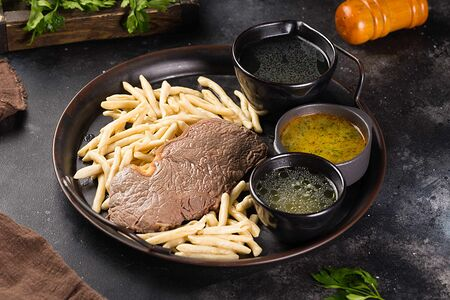

Галнаш

Ингредиенты
- Мясо 0,5-1 Килограмма (баранина, говядина, курятина)
- Мука 500-700 Грамм
- Яйцо 1 Штука
- Соль 1 Чайная ложка
- Вода 250 Миллилитров
- Чеснок 6-7 Зубчиков
Способ пригтовления
- Я использовала в этом рецепте курицу, но вы можете приготовить жижиг галнаш с говядиной или бараниной. Итак, мясо промываем под холодной водой и ставим вариться, воду немного солим.
- В глубокую посуду насыпаем муку, делаем в мучной горке углубление и наливаем в него воду, добавляем яйцо и чайную ложку соли. Подробнее
- Теперь нам необходимо замесить довольно крутое и эластичное тесто.
- Делим тесто на 2 равные части и одну из частей раскатываем в лепешку (толщина примерно 1 сантиметр)
- Теперь лепешку необходимо нарезать на полоски по 2-3 сантиметра шириной.
- Эти полоски в свою очередь мы нарезаем на более мелкие кусочки по 1 сантиметру шириной.
- Далее выкладываем эту маленькую полосочку на доску, прижимаем тремя пальцами и растягиваем тесто по направлению к себе. Отпускаем и у нас выходит вот такая замечательная ракушка. И дальше делаем так со всеми
- Теперь мы ставим на огонь бульон или воду (ее следует подсолить). Когда вода закипит, вкидываем в нее наши ракушки из теста.
- Перемешиваем, чтобы они не слиплись, и варим примерно минут 10-15.
- Чеснок чистим и растираем, добавляем соль и заливаем куриным бульоном - это наш соус.